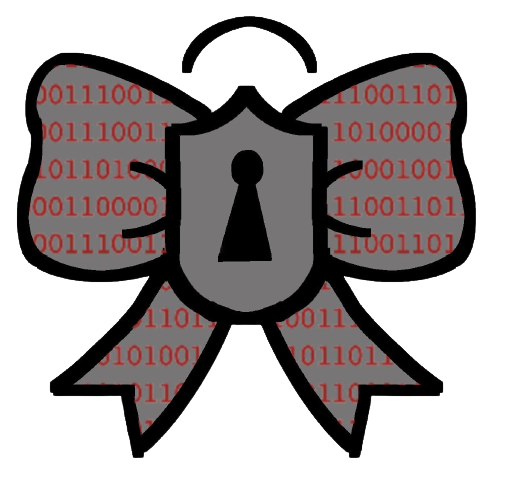

Educate
Protect
Protect
Protect Your Phone.
By visiting and downloading the websites and apps recommended in the Resources page at least on a monthly basis, the chances of your data becoming compromised decreases drastically.
Virtual Proxy Network. Get one. VPNS provide numerous benefits; one of which being protecting yourself against surveillance capitalism. They protect one’s data from apps, services, service providers, and even IP addresses. By using a VPN online, a user’s connections become encrypted as well which double protection from this form of capitalism and even hackers.
Google. Try to get rid of it. Using different browsers that are well known for their good data privacy is a good recommendation. DuckDuckGo, for instance, does not collect any personal information nor sell your data. If ducks are not someone’s thing, they may want to consider trying Qwant or Startpage.
Resort to file-sharing alternatives. Applications like Google Drive use the data uploaded by users is collected to predict even more behavior for advertisers. By using ones like Onion or Mega, users do not have to worry about some of their most precious and personal documents or images being used for profit-makiing.
Protect Yourself.
By visiting and downloading the websites and apps recommended in the Resources page at least on a monthly basis, the chances of your data becoming compromised decreases drastically.
Virtual Proxy Network. Get one. VPNS provide numerous benefits; one of which being protecting yourself against surveillance capitalism. They protect one’s data from apps, services, service providers, and even IP addresses. By using a VPN online, a user’s connections become encrypted as well which double protection from this form of capitalism and even hackers.
Google. Try to get rid of it. Using different browsers that are well known for their good data privacy is a good recommendation. DuckDuckGo, for instance, does not collect any personal information nor sell your data. If ducks are not someone’s thing, they may want to consider trying Qwant or Startpage.
Resort to file-sharing alternatives. Applications like Google Drive use the data uploaded by users is collected to predict even more behavior for advertisers. By using ones like Onion or Mega, users do not have to worry about some of their most precious and personal documents or images being used for profit-makiing.